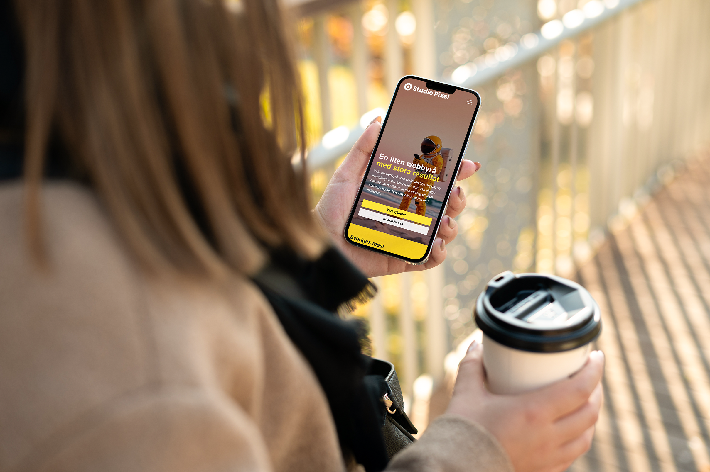
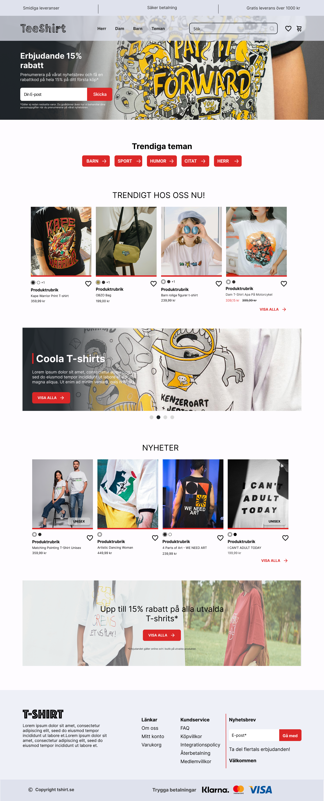

StudioPixel - 2025 (Internship)
Timeline: 20 february 2025 - 21 march 2025
My role(s): Graphic Designer, Web and UX designer & Collaborator
During my five weeks at Studio Pixel, I had the opportunity to apply my knowledge in a professional setting, and through the internship, I was also able to further develop my skills. Some of the knowledge I brought with me includes areas such as web design, UX, and graphic design, which I have learned through the IT, Media, and Design (IMD) program.
Studio Pixel is an advertising agency specializing in web design, digital marketing, and UX and graphic design. The internship allowed me to grow within my creative fields. By working on various projects, I was able to strengthen my existing skills while also developing new competencies in areas such as responsive design and AI tools.
In WordPress, I also learned how to manage products, gaining insights into updating product descriptions, changing images, and creating tags, also known as categories. By collaborating with another intern who implemented my design suggestions in WordPress, we were both able to learn from each other.

